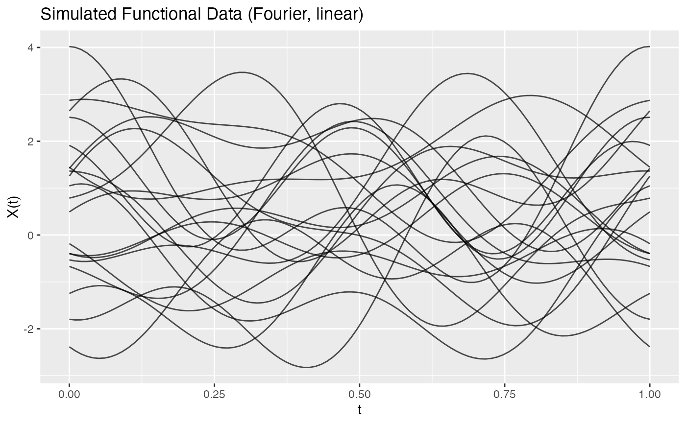
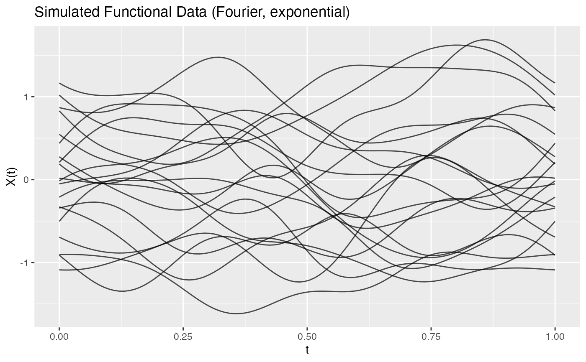
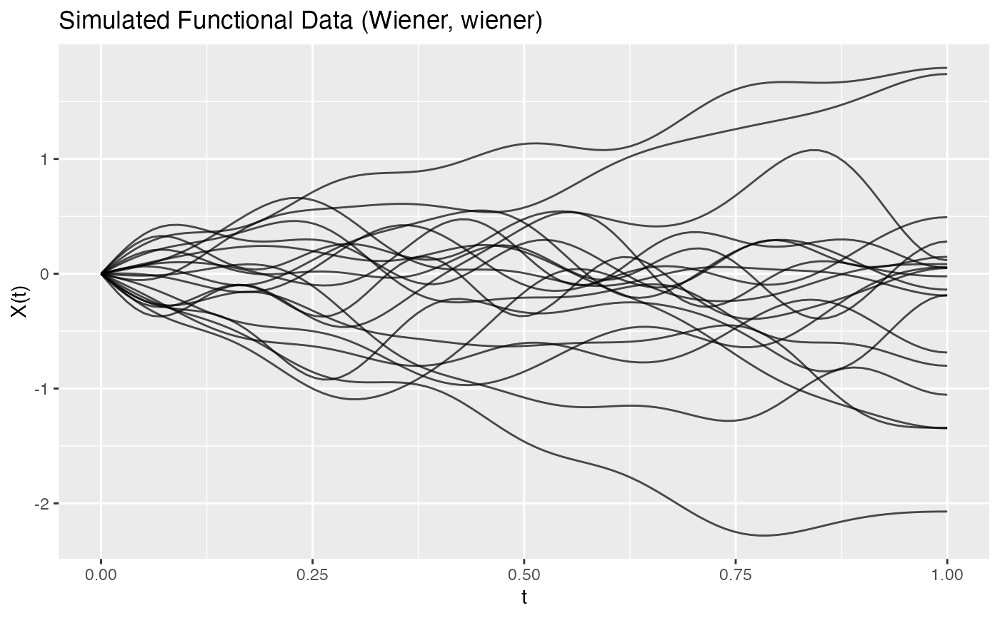
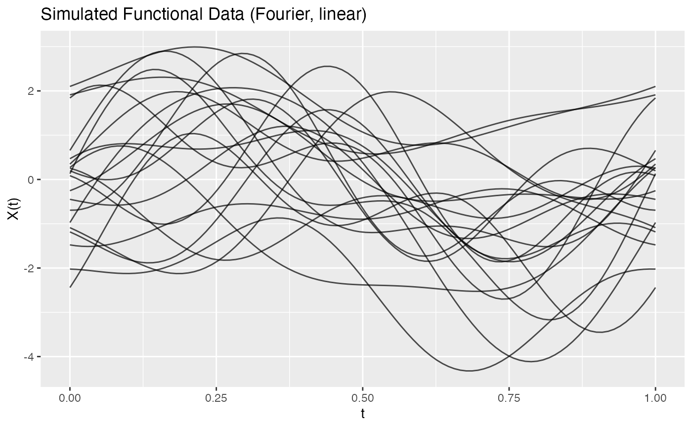

Generates functional data samples using a truncated Karhunen-Loeve
representation: f_i(t) = mean(t) + sum_{k=1}^M xi_{ik} * phi_k(t)
where xi_{ik} ~ N(0, lambda_k).
Arguments
- n
Number of curves to generate.
- argvals
Numeric vector of evaluation points.
- M
Number of basis functions (eigenfunctions) to use.
- eFun.type
Type of eigenfunction basis:
"Fourier","Poly","PolyHigh", or"Wiener".- eVal.type
Type of eigenvalue decay:
"linear","exponential", or"wiener".- mean
Mean function. Can be:
NULLfor zero meanA numeric vector of length equal to
argvalsA function that takes
argvalsas input
- seed
Optional integer random seed for reproducibility.
Details
The Karhunen-Loeve expansion provides a natural way to simulate Gaussian functional data with a specified covariance structure. The eigenvalues control the variance contribution of each mode, while the eigenfunctions determine the shape of variation.
The theoretical covariance function is:
Cov(X(s), X(t)) = sum_{k=1}^M lambda_k * phi_k(s) * phi_k(t)
Examples
t <- seq(0, 1, length.out = 100)
# Basic simulation with Fourier basis
fd <- simFunData(n = 20, argvals = t, M = 5,
eFun.type = "Fourier", eVal.type = "linear")
plot(fd, main = "Simulated Functional Data (Fourier, Linear)")

# Smoother curves with exponential decay
fd_smooth <- simFunData(n = 20, argvals = t, M = 10,
eFun.type = "Fourier", eVal.type = "exponential")
plot(fd_smooth, main = "Smooth Simulated Data (Exponential Decay)")

# Wiener process simulation
fd_wiener <- simFunData(n = 20, argvals = t, M = 10,
eFun.type = "Wiener", eVal.type = "wiener", seed = 42)
plot(fd_wiener, main = "Wiener Process Simulation")

# With mean function
mean_fn <- function(t) sin(2 * pi * t)
fd_mean <- simFunData(n = 20, argvals = t, M = 5, mean = mean_fn, seed = 42)
plot(fd_mean, main = "Simulated Data with Sinusoidal Mean")
